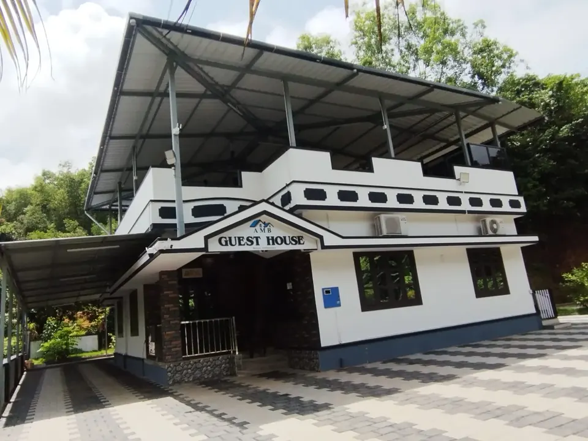
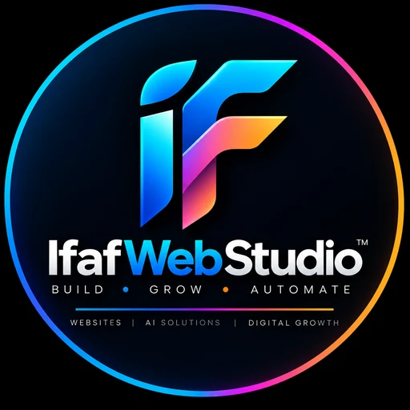

01 · Travel & Taxi · Live
East West Travels
A responsive local travel website structured around fleet, services, service areas and direct booking enquiries.
Website developer · Manipal & Udupi
IfafWebStudio builds professional websites, AI-assisted business systems and digital support for hospitality, travel, restaurants and local-service businesses.
What the studio does
A good website is only one part of the customer journey. IfafWebStudio combines web development with practical digital support—WhatsApp enquiries, search visibility, business profiles, content and automation—when the business actually needs it.
Capabilities
Five focused areas instead of a wall of small services.

Business websites, WordPress, custom development, responsive builds and redesigns.
Explore service ↗
Hotels, resorts, homestays, restaurants, taxi and travel businesses.
Explore service ↗
AI chatbots, WhatsApp automation, assistants and workflow automation.
Explore service ↗
Technical SEO, local SEO, Google Business Profile, GEO, AEO and Google Ads support.
Explore service ↗
Social media, AI video, editing, creative design, content planning and presentations.
Explore service ↗Websites by industry
Dedicated pages explain what each kind of project includes, with real examples and direct answers.
Rooms, galleries, location and direct booking enquiries.
Learn more ↗Food & beverageMobile menus, QR digital menus, timings and location.
Learn more ↗TravelFleet, routes, service areas and one-tap WhatsApp booking.
Learn more ↗Web developmentWordPress, custom-coded, responsive builds and redesigns.
Learn more ↗AI & automationFaster replies and organised enquiries without extra admin.
Learn more ↗VisibilityBe found on Google, Maps and AI assistants like ChatGPT.
Learn more ↗Selected work
Portfolio credibility comes from the actual projects—not invented metrics.
A responsive local travel website structured around fleet, services, service areas and direct booking enquiries.
Property presentation, rooms, amenities, location information and direct enquiry actions.
View Live Website ↗
Visual resort experience with rooms, activities and booking-focused customer journeys.
View Live Website ↗
Founder-led
Mohammed Ifaf is an AI Website Developer & Digital Business Support professional based in Manipal, Karnataka. Projects stay close to the business requirement instead of moving through layers of account management.
About IfafWebStudio ↗Quick answers
Direct answers about the studio, services, pricing and location.
IfafWebStudio builds professional websites and provides AI automation, SEO, Google Business Profile support, social media, AI video, QR digital menus and related digital business support for hospitality, travel, restaurant and local-service businesses.
Mohammed Ifaf is the founder of IfafWebStudio and works as an AI Website Developer & Digital Business Support professional based in Manipal, Karnataka. Clients work with him directly.
IfafWebStudio, led by Mohammed Ifaf, provides business website development and web design from Manipal, Karnataka, with a focus on hospitality, travel, restaurants and local-service businesses.
Yes. IfafWebStudio provides WordPress website development as well as custom business websites, responsive websites and website redesigns.
Yes. Hospitality website work includes hotels, resorts, homestays and guest houses, with room or property presentation, galleries, location information and direct enquiry flows. Live examples include AMB Guest House, Island Resort and Golden Riveria.
Yes. IfafWebStudio builds restaurant websites and QR digital menus, and taxi and travel websites with clear services, locations and WhatsApp-first enquiry paths.
Yes. Services include AI chatbots, WhatsApp automation, AI business assistants, enquiry automation and workflow automation when they fit the business use case.
Yes. SEO support includes technical SEO, local SEO, keyword optimization, GEO, AEO and Google Business Profile optimization, along with Google Ads and OTA listing support where required.
Cost depends on the number of pages, features and content involved. The project enquiry form lists budget ranges from ₹20,000–₹30,000 upward, with a “Need guidance” option if you are not sure yet.
IfafWebStudio is based in Manipal, Karnataka (Udupi district), and works with businesses in Manipal, Udupi and other locations in India depending on the project.
Start a conversation
Send your business name, what you currently have and what you want customers to do next.